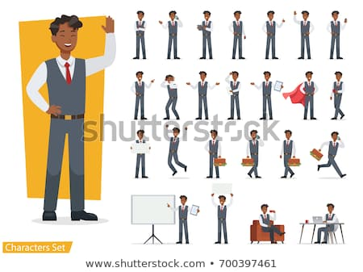
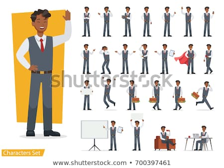

Dress to Impress / for Success
 

Dress for Success
| Clothing Colors | Black | Blue | Red |
|---|---|---|---|
| Interview? | Yes | Yes | No |
| Work? | Yes | Yes | Yes |
Looking the part is one thing, but acting the part is a whole other ball park. Some practices that might help you in speaking would be hand placement and eye contact. One thing to try would be to keep your arms and hands toward your chest, and to make natural movement when speaking. Make sure to focus on multiple points, if not people, in the crowd in order to keep their attention on you and what you're speaking about. Voice projection is also something to keep in mind, as not everyone will have the same capacity to hear.
Another major component toward marketing yourself would be practice. Practice is something that can't be stressed enough when trying to brand yourself and market yourself as a product someone would want. Practicing will give you confidence, and with that confidence your public speaking will also improve with practice. Talking to people will get you places, but you first need to be confident in talking. As one of my friends always says, You need to network to get work.